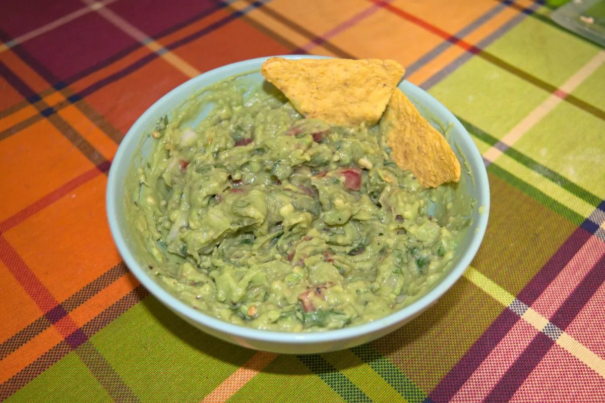

Fresh guacamole

A nice recipe that functions as a delicious and fresh appetizer, best eaten with some totopos corn chips, especially in a hot summer day.
Ingredients:
- 2 Hass avocados
- ¼ medium onion
- Garlic salt
- Cilantro
- 1 lime
Steps:
- Cut the avocados in half, open them and place the pulp in a bowl.
- Mash the avocados, add lime juice, mix and mash some more.
- Mince the cilantro, tomato and onion and add them to the avocado mix.
- Add salt and black pepper to taste and mix thoroughly.
- Enjoy fresh with some totopos!
This recipe is best consumed fresh, since the avocado oxidizes pretty fast and might lose its appetizing color and texture in just some hours.